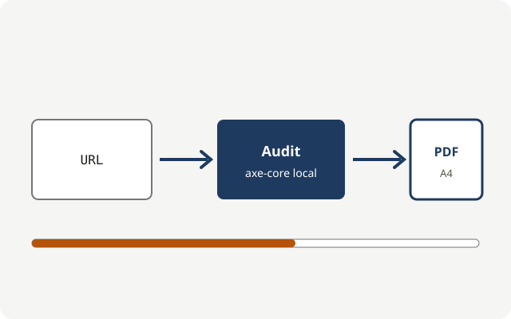

Un rapport d'audit d'accessibilité, prêt à livrer à votre client
a11y-report audite vos pages avec axe-core dans un navigateur local et produit un PDF en français, aux couleurs et au nom de votre agence, avec un devis par phase tiré du même audit.

Ce que l'outil apporte à votre agence
-
Un livrable client, sans mise en forme
Le PDF A4 porte le nom et le logo de votre agence, la couleur de votre choix et le nom du client. Aucune autre marque n'y figure.
-
Un devis tiré de l'audit
Les corrections sont regroupées en trois phases : bloquants, gênants, finitions. Avec un taux horaire, chaque phase reçoit un prix HT.
-
Un audit exécuté sur votre poste
Playwright et axe-core tournent en local, en ligne de commande. Les résultats s'archivent en JSON et se rechargent sans relancer l'audit.
Une limite à connaître
Un audit automatique détecte environ un tiers des problèmes d'accessibilité. Le rapport ne remplace pas un test manuel au clavier et avec un lecteur d'écran, et il n'est pas une certification de conformité RGAA ou WCAG. Lire les questions fréquentes